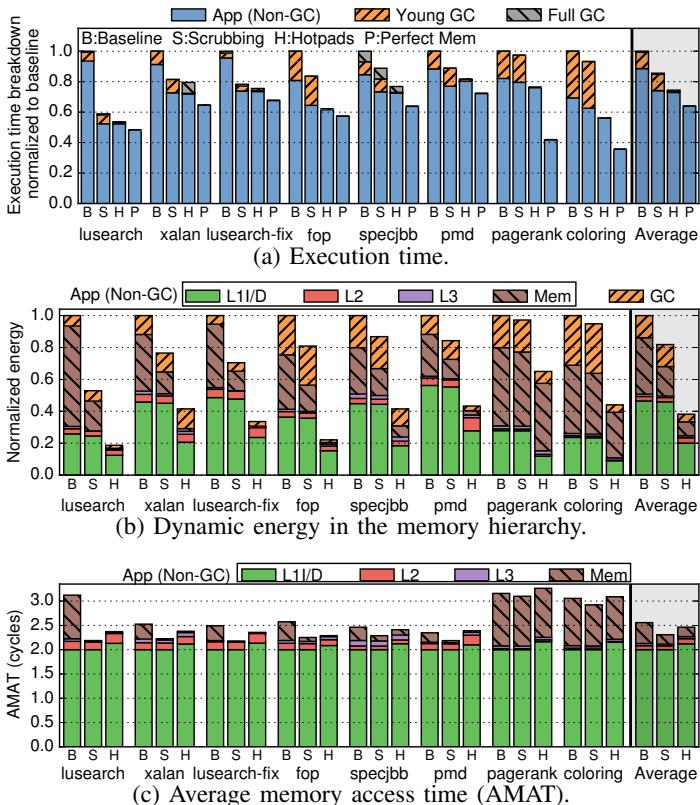
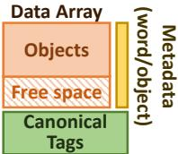
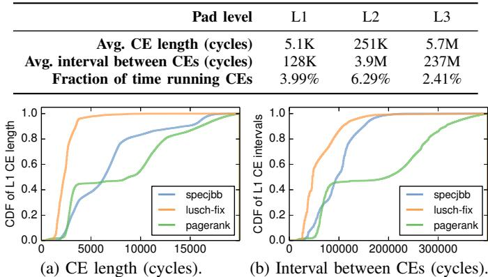
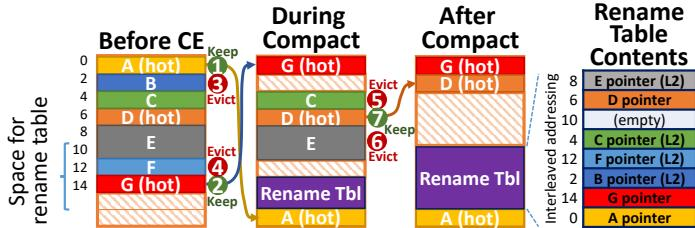

Rethinking the Memory Hierarchy for Modern Languages 论文解析¶
0. 论文基本信息¶
作者 (Authors): Po-An Tsai, Yee Ling Gan, Daniel Sanchez
发表期刊/会议 (Journal/Conference): MICRO
发表年份 (Publication Year): 2018
研究机构 (Affiliations): Massachusetts Institute of Technology
1. 摘要¶
目的
- 为 Java、Go、Rust 等现代 memory-safe languages（内存安全语言）重新设计内存层次结构，以解决传统基于 flat address space（扁平地址空间）的缓存层次与这些语言语义不匹配的问题。
- 利用内存安全语言 隐藏内存布局 的核心特性，将控制权交给硬件，从而消除对 associative caches（关联缓存）的需求，提升性能和能效。
方法
- 提出 Hotpads，一种全新的硬件管理的内存层次结构，其核心是名为 pads 的直接寻址存储器层级，类似于 scratchpads（暂存器）。
- Hotpads 的关键特性包括：
- Implicit, object-based data movement（隐式、基于对象的数据移动）：数据移动由内存访问隐式触发。
- Pointer rewriting（指针重写）：硬件自动重写指针，使其指向对象在 L1 pad 中的位置，从而避免后续访问的关联查找。
- In-hierarchy object allocation（层级内对象分配）：新对象直接在 L1 pad 的空闲空间中分配，无需主存后备存储。
- Unified hierarchical garbage collection and evictions（统一的分层垃圾回收与驱逐）：通过 collection-eviction (CE) 过程，在回收死对象的同时，将非最近使用的活对象驱逐到下一级 pad。
- 设计了配套的 Hotpads ISA，将指针视为 abstract data types (ADTs)，禁止程序读取或操作原始指针，并引入
derefptr、seqptr、alloc等新指令。 - 采用 canonical levels（规范层级）和 canonical tags (c-tags)（规范标签）等机制来管理对象在层级中的位置和元数据，确保系统正确性。
 Fig. 4: Example showing Hotpads’s key features.
Fig. 4: Example showing Hotpads’s key features.
结果
- 通过详细的模拟器评估，Hotpads 相比传统缓存层次展现出显著优势：
- 性能：平均提升 34%，最高可达 86%。
- 能效：内存层次的动态能耗降低 2.6倍。
- 垃圾回收开销：平均减少 8倍。
- 核心优势来源：
- L1 pad 效率：得益于指针重写，80% 的 L1 访问为直接访问，使其能效比 L1 缓存高 2.3倍。
- 高效利用片上容量：以可变大小的对象而非固定大小的缓存行进行管理，提高了利用率。
- 大幅减少数据移动：主存流量最高可减少 6.6倍。
- 对于不安全的传统程序，Hotpads 的兼容模式仅带来 4% 的平均性能损失。
| 指标 | Baseline (Cache) | Hotpads | 提升/降低 |
|---|---|---|---|
| 平均性能 | 1.0x | 1.34x | +34% |
| 内存层次动态能耗 | 1.0x | 0.38x | -2.6x |
| GC 开销 | 11% of time | 1.5% of time | -8x |
| Legacy Mode 性能 | 1.0x | 0.96x | -4% |
 Fig. 14: Simulation results for single-threaded workloads.
结论
- 将内存安全语言“隐藏内存布局”的核心思想扩展到硬件层面是可行且高效的。Hotpads 通过摒弃传统的扁平地址空间抽象，成功地将 garbage collection（垃圾回收）的原则与 memory hierarchy（内存层次）的设计相统一。
- Hotpads 不仅在性能和能效上大幅超越了传统缓存，还为未来的内存系统研究开辟了新方向，例如：
- Security（安全性）：通过消除缓存，可有效规避 Spectre 和 Meltdown 等基于缓存的侧信道攻击。
- Isolation（隔离）：可简化或消除 Virtual Memory（虚拟内存）开销，并提供更廉价的性能隔离。
- Concurrency and non-volatility（并发与非易失性）：其多版本存储特性可用于实现 transactional memory（事务内存）或加速 NVM logging（非易失内存日志）。
2. 背景知识与核心贡献¶
研究背景与动机
- 现代主流编程语言（如 Java, Go, Rust）均为 memory-safe (内存安全) 语言，它们通过隐藏底层内存布局、禁止直接指针操作来防止内存错误，并依赖 Garbage Collection (GC, 垃圾回收) 进行自动内存管理。
- 然而，当前的计算机体系结构（特别是 memory hierarchy, 内存层次结构）仍为 C/Fortran 等早期语言设计，其核心是维护一个对程序员透明的 flat address space (平坦地址空间) 抽象。
- 为了在物理上实现这种抽象，现代系统严重依赖 associative caches (相联缓存) 和 virtual memory (虚拟内存) 等昂贵的硬件机制，这与内存安全语言的语义存在根本性不匹配，导致了显著的性能和能效开销。
核心贡献：Hotpads 架构
- 提出 Hotpads，一种为内存安全语言从头设计的全新内存层次结构。其核心思想是将“隐藏内存布局”这一软件原则延伸至硬件，彻底摒弃平坦地址空间抽象。
- Hotpads 使用一个由硬件管理的、层级化的 directly addressed memories (直接寻址存储器)，作者称之为 pads (垫)，替代传统的相联缓存。
- 通过以下四个关键特性实现高效的数据管理和访问：
- Implicit, object-based data movement (隐式、基于对象的数据移动): 数据移动由内存访问隐式触发，而非显式指令。
- Pointer rewriting to avoid associative lookups (指针重写以避免相联查找): 硬件在对象被加载到 L1 pad 后，自动重写指向它的指针，使得后续访问变为高效的直接寻址，从而避免了绝大多数的相联查找。
- In-hierarchy object allocation (层次内对象分配): 新创建的对象直接在 L1 pad 的空闲空间中分配，无需预先在主存中分配后备存储。
- Unified hierarchical garbage collection and evictions (统一的分层垃圾回收与驱逐): 当 pad 空间不足时，触发 collection-eviction (CE, 收集-驱逐) 过程。该过程融合了 tracing GC (追踪式垃圾回收) 和缓存驱逐逻辑，既能回收死亡对象，又能将存活但非最近使用的对象驱逐到下一级 pad。
Fig. 4: Example showing Hotpads’s key features.
主要成果与优势
- 性能与能效: 在 Java 基准测试中，Hotpads 相比传统缓存层次结构，平均性能提升 34%，内存层次能耗降低 2.6 倍。
- GC 开销大幅降低: 通过硬件并发执行 CE 过程，GC 开销平均减少了 8 倍。
- 兼容性: 提供兼容模式以支持内存不安全的遗留程序，仅带来 4% 的平均性能损失。
- 开启新优化方向: 该架构天然规避了基于缓存的侧信道攻击（如 Spectre, Meltdown），并为未来的 security (安全)、isolation (隔离) 和 concurrency (并发) 技术提供了新的硬件基础。
3. 核心技术和实现细节¶
0. 技术架构概览¶
整体技术架构
Hotpads 是一种为 memory-safe languages（如 Java, Go, Rust）从头设计的新型内存层次结构，其核心思想是将软件中“隐藏内存布局”的原则延伸至硬件，从而摒弃传统的flat address space（平坦地址空间）抽象，并用一套由硬件管理的、基于对象的直接寻址内存（称为 pads）来替代关联式缓存。
-
基本组成单元 (Pads):
- Hotpads 由一个多层次的 pads 组成，每个 pad 类似于一个硬件管理的 scratchpad。
- 每个 pad 内部包含三个主要部分：
- Data Array: 用于存储对象的主数据区，采用循环缓冲区组织，包含一个连续的已分配对象块和一个连续的空闲空间块。
- Canonical Tags (c-tags) Array: 一个解耦的、类似 V-way cache 的关联式标签存储，用于将对象的canonical address（规范地址）映射到其在当前 pad 中的物理地址。
- Metadata Arrays: 包含 per-word 和 per-object 的元数据，例如指针位（标识字是否为指针）、有效/脏位、以及用于驱逐决策的recency bits。
-  Fig. 3: Pad organization.
-
核心运行机制:
- 隐式、基于对象的数据移动: 所有数据移动都由硬件在访问时自动触发。当核心访问一个不在 L1 pad 中的对象时，该对象会被完整地复制到 L1 pad 的空闲区域。
- 指针重写 (Pointer Rewriting): 为了规避昂贵的关联式查找，硬件会在对象被复制到 L1 pad 后，自动重写所有指向该对象的指针（包括寄存器和 L1 pad 内的指针），使其直接指向 L1 中的新位置。这使得后续的访问变为高效的direct access。
- Fig. 4: Example showing Hotpads’s key features.
- 层级内对象分配 (In-hierarchy Allocation): 新创建的小对象直接在 L1 pad 的空闲空间中分配，无需在主存中预留后备存储，从而实现极低开销的分配。
- 统一的层级垃圾回收与驱逐 (Collection-Eviction, CE): 当一个 pad 空间不足时，会触发一个类似moving garbage collection的过程。该过程同时完成两项任务：
- 回收 (Collection): 识别并释放不可达（dead）对象的空间。
- 驱逐 (Eviction): 将可达但近期未被访问的（live but non-recently accessed）对象驱逐到下一级 pad。
- 并发执行: CE 过程与程序执行并发进行，通过一个简单的alternating-bit protocol（交替位协议）来保证一致性，仅引入极短的暂停时间（数十个周期）。
-
关键不变性 (Invariants):
- Invariant 1: 一个对象始终存在于其canonical level（规范层级）。
- Invariant 2: 非 L1 层级的对象指针必须是canonical的。
- Invariant 3: 一个对象只能指向与其同级或更高级（离核心更远）的对象。
- Invariant 4: 只有 canonical 对象或 L1 中的对象副本可以作为根（roots）。
- 这些不变性确保了层级化 CE 的正确性和独立性。
-
指令集架构 (ISA) 支持:
- Hotpads ISA 将指针视为abstract data types (ADTs)，禁止程序直接读取或操作原始指针值。
- 引入了新的指令来支持安全的指针操作：
derefptr: 用于指针解引用，触发指针重写。ldptr/stptr: 用于加载/存储指针，告知硬件该数据是指针。seqptr: 用于安全地比较两个指针是否指向同一对象（即使它们的位模式不同）。alloc: 用于在层级内分配新对象。
 TABLE I: HOTPADS ISA.
TABLE I: HOTPADS ISA.
-
对复杂场景的支持:
- 大对象: 通过subobjects（子对象）机制支持任意大小的对象。大对象被分割成固定大小的块（如 64 字节），按需将子对象缓存到 pads 中。
- 多核一致性: 在共享的最高级 pad（如 L3）上实现object-level MESI coherence，避免了 false sharing，并利用对象首字中的额外位存储 sharer set。
- 向后兼容: 提供legacy mode，将传统 C/C++ 程序的整个地址空间视为一个大对象，以支持内存不安全的遗留代码，仅带来约 4% 的性能损失。
1. 隐式、基于对象的数据移动¶
隐式、基于对象的数据移动的实现原理与流程
- 核心触发机制：该机制完全由硬件驱动，其唯一触发条件是内存访问（memory access）。当处理器核心发起一次对某个对象的访问请求时，硬件会自动检查该对象是否存在于当前层级的 pad（例如 L1 pad）中。
- 缺失处理 (Miss Handling)：
- 如果目标对象不在L1 pad中（即发生“miss”），硬件不会像传统缓存那样去获取一个固定大小的 cache line，而是会定位到该对象的完整数据。
- 硬件随后将整个对象从其所在位置（可能是更高层级的 L2/L3 pad 或 main memory）复制（copy）到 L1 pad 的空闲空间（free space）区域。
- 这个过程对软件完全透明，程序无需执行任何显式的加载（load）或移动（move）指令。
Fig. 4: Example showing Hotpads’s key features.
-
对象边界识别：为了能够精确地移动整个对象而非固定大小的数据块，Hotpads 需要知道每个对象的边界。这通过两种方式实现：
- 指针内嵌元数据：如图
aa7f421464a9fee508f7ec1751fd796efdee2876a7909da1be9294af99d3053b.jpg所示，Hotpads 的指针格式在其高16位中嵌入了对象大小（size in words）等元数据。这使得硬件在拿到指针后能立即知道对象的长度。 - ISA 指令约束：Hotpads ISA 规定所有内存访问必须采用 base+offset 寻址模式，且 base 寄存器必须是一个指向对象起始地址的指针。这确保了硬件总能从对象头部开始操作。
- 指针内嵌元数据：如图
-
与传统缓存的关键区别：
- 粒度不同：传统缓存以固定大小（fixed-size cache lines）为单位进行数据移动，而 Hotpads 以可变大小（variable-size objects）为单位。这避免了因 cache line 内部包含不相关数据而导致的内部碎片（internal fragmentation）和带宽浪费。
- 效率提升：论文评估显示（Fig. 14d），这种基于对象的移动方式显著提高了片上容量利用率（on-chip capacity utilization）。L1 pad 的利用率达到 35%，而传统 L1 cache 仅为 29%。
在整体架构中的作用与输入输出关系
- 输入：来自处理器核心的内存访问请求，该请求包含一个对象指针（object pointer）和一个偏移量（offset）。
- 输出：
- 数据：被访问的对象数据被放置在 L1 pad 中，并完成本次访问。
- 状态：L1 pad 的已分配区域（allocated region）增长，空闲空间（free space）相应减少。同时，会在 canonical tags (c-tags) 数组中创建一个新的条目，用于记录该对象的规范地址（canonical address）到其在 L1 pad 中的物理地址的映射。
- 核心作用：
- 构建高效内存层次：这是 Hotpads 整个内存层次结构运作的基础。它使得数据能够根据访问热度自动在层级间流动，将热点对象保留在快速的 L1 pad 中。
- 支撑指针重写：只有当对象被成功移动到 L1 pad 后，后续的指针重写（pointer rewriting）机制才能生效，从而将后续对该对象的访问转化为高效的直接寻址（direct access），避免昂贵的关联查找（associative lookup）。
- 赋能统一垃圾回收：当 L1 pad 的空闲空间耗尽时，会触发收集-驱逐（collection-eviction, CE）过程。CE 过程依赖于 pad 中存放的是完整的、边界清晰的对象，才能准确地遍历对象图、标记存活对象并进行压缩或驱逐。隐式数据移动确保了 CE 过程的操作对象是语义完整的“对象”，而非无意义的“缓存行”。
2. 指针重写以避免关联查找¶
指针重写机制的核心原理
- 根本目标：消除传统缓存中每次内存访问都必须进行的关联查找 (associative lookup)，从而降低延迟和能耗。
- 核心洞察：在内存安全语言中，程序员无法直接读取或操作指针的原始地址值，只能对其进行解引用 (dereference) 或比较 (comparison)。这为硬件在底层透明地修改指针值提供了可能。
- 基本策略：当一个对象被从高层级（如 L2 pad 或主存）复制到 L1 pad 时，硬件会自动将所有指向该对象的指针更新为指向其在 L1 pad 中的新地址。后续对该指针的解引用操作将直接命中 L1 pad，无需任何标签查询。
算法流程与关键组件
- 触发时机：
- 当核心发起一个内存访问，且其基地址指针（base pointer）指向的对象不在 L1 pad 中时。
- 硬件首先将该对象从其规范层级 (canonical level) 复制到 L1 pad 的空闲区域。
- 重写位置：
- 寄存器中的指针：如果访问是由
ld/st指令发起，硬件会在数据返回后，将核心寄存器文件中对应的指针值重写为 L1 地址。 - L1 pad 内存中的指针：如果访问是由
derefptr指令发起，硬件在将目标对象 B 加载到 L1 后，会直接修改 L1 pad 中对象 A 的字段，将其指向 B 的指针更新为 B 在 L1 中的地址。
- 寄存器中的指针：如果访问是由
- 辅助数据结构：
- 规范标签数组 (canonical tags array, c-tags)：这是一个小型的、类似缓存标签的组相联结构。它存储了从对象的规范地址到其在当前 pad 层级（如 L1）中物理地址的映射。只有当对象的副本存在于该 pad 时，才需要 c-tag 条目。
- 指针格式：Hotpads 指针的高 16 位包含元数据，其中一位是 canonical bit，用于标识该指针是否指向对象的规范层级。这使得硬件能快速判断是否需要进行重写或查询 c-tags。
 Fig. 9: Steps in L1 pad access. Wider arrows denote more frequent events.
Fig. 9: Steps in L1 pad access. Wider arrows denote more frequent events.
输入输出关系及在整体架构中的作用
- 输入：
- 一个指向非 L1 对象的指针（通常是一个规范指针）。
- 一次内存访问请求（
ld/st或derefptr）。
- 输出：
- 对于
ld/st：返回请求的数据，并重写源寄存器中的指针。 - 对于
derefptr：返回请求的数据，并重写 L1 pad 中源对象内的指针字段。 - 对象的一个副本被放置在 L1 pad 中。
- 对于
- 在 Hotpads 架构中的作用：
- 性能提升：通过将昂贵的关联查找（c-tag 查询）从“每次访问”降级为“首次访问”，极大地提升了 L1 访问效率。评估显示，80% 的 L1 访问成为直接访问。
- 能效优化：直接访问 L1 pad 的动态能耗（16 pJ）远低于 L1 缓存命中（69 pJ），实现了 4.3× 的能效提升。
- 简化设计：由于大部分访问变为直接寻址，L1 pad 可以采用更简单的、类似 scratchpad 的组织方式，避免了全相联或高相联度缓存的复杂性和面积开销。
- 与垃圾回收协同：指针重写确保了在 collection-eviction (CE) 过程中移动对象后，所有指向该对象的指针都能被正确更新，维持了系统的正确性。
效果与局限性
- 效果显著：如图所示，指针重写机制成功将 80% 的 L1 pad 访问转化为高效的直接访问，这是 Hotpads 相对于传统缓存取得性能和能效优势的关键。
 Fig. 19: CDFs of lengths and intervals for L1 CEs.
- 主要局限：
- 仅限 L1：为了简化设计和控制开销，指针重写只在 L1 pad 执行。更高层级的 pad（如 L2, L3）仍然需要依赖 c-tags 进行关联查找，但由于 L1 的高命中率，这部分开销对整体影响较小。
- 依赖 ISA 支持：需要新的指令（如
derefptr,ldptr）来明确告知硬件哪些内存操作涉及指针，以便进行正确的重写和元数据管理。
3. 层次化垃圾回收与驱逐统一（Collection-Eviction, CE）¶
CE过程的触发条件与核心目标
- 触发条件：当一个pad的空闲空间降至预设的低阈值时，会触发一次Collection-Eviction (CE) 过程。
- 核心目标：CE旨在一次性回收约75%的pad容量，通过两个互补的操作实现：
- 垃圾回收 (Garbage Collection): 识别并释放死亡对象（即不可达对象）占用的空间。
- 驱逐 (Eviction): 将存活但非最近访问的对象移动到下一级pad，以腾出空间给更热的数据。
CE算法的详细流程
CE过程在硬件中由一个专用引擎执行，其流程模仿了移动式垃圾回收器 (moving GC)，包含四个关键步骤：
-
1. 寻找根指针 (Find roots)
- 输入: 对于L1 pad，根指针是当前位于核心寄存器中的所有指向该L1 pad内对象的指针。核心会将这些指针提供给CE引擎。
- 优势: 与软件GC需要遍历整个调用栈不同，Hotpads的根查找成本极低（仅需几十个周期），因为栈帧本身也被分配在堆（pad）中，无需单独扫描。
-
2. 标记存活对象 (Mark live objects)
- 使用标准的三色标记法 (tricolor mark pass) 来遍历对象图。
- 利用对象头部的两个CE标记位来记录状态（未扫描、待扫描、已扫描）。
- 为了加速，使用一个小型FIFO队列（实现中为16个条目）来缓存待扫描对象，减少对整个数据阵列的线性扫描。
-
3. 压缩或驱逐存活对象 (Compact or evict live objects)
- 引擎再次扫描数据阵列，处理每个被标记为存活的对象。
- 决策依据: 检查对象的4位粗粒度LRU时间戳（recency bits）。如果对象不在最近访问的25%容量内，则被驱逐到下一级pad；否则，被移动到数据阵列的空闲区域前端，形成一个紧凑的存活对象块。
- 维护层级不变量: 在驱逐过程中，必须确保不变量3（一个对象只能指向同级或更高级的对象）不被破坏。如果一个被驱逐的对象E指向了另一个仍在L1的存活对象P，且P的规范层级 (canonical level) 是L1，那么P的规范层级会被提升到L2，以便E能合法地指向它。
 Fig. 10: Example of an eviction that requires changing the canonical level of a non-evicted object (P).
Fig. 10: Example of an eviction that requires changing the canonical level of a non-evicted object (P). - 构建重命名表: 在移动/驱逐过程中，引擎会构建一个重命名表 (rename table)，记录每个存活对象的旧地址到新地址（或新层级地址）的映射。
-
4. 更新指针 (Update pointers)
- 引擎遍历整个数据阵列以及核心寄存器中的所有指针。
- 对于每一个指向已被移动/驱逐对象的旧指针，查询重命名表并将其更新为新的正确地址。
- 完成后，重命名表被丢弃。
并发执行与空间管理技巧
- 并发操作: CE过程与程序执行并发进行，通过一个简单的交替位协议 (alternating-bit protocol) 实现。指针格式中包含一个epoch位，用于区分新旧指针版本，确保在CE期间访问旧指针仍能正确找到对象。
- 双端压缩 (Dual-ended compaction): 为了高效地容纳可能很大的重命名表（实现中占pad容量的50%），采用了双端压缩策略。 Fig. 11: Dual-ended compaction example. All objects are 2 words long, except E, which takes 4 words.
- 重命名表被放置在旧数据区域的末尾之后。
- 压缩过程交替从旧区域的开头和末尾处理对象。
- 从开头压缩释放的空间用于存放新的紧凑对象块。
- 从末尾压缩释放的空间用于动态增长重命名表。
在整体系统中的作用
- 统一内存管理: CE过程是Hotpads设计的核心创新，它统一了传统上分离的缓存驱逐（基于局部性）和垃圾回收（基于可达性）两大机制。
- 利用双重经验法则: 它同时利用了局部性原理 (locality principle) 和分代假说 (generational hypothesis)，使得内存层次结构的管理更加智能和高效。
- 显著降低开销: 通过在硬件中并发、高效地执行CE，Hotpads将GC开销平均降低了8倍，这是其整体性能提升34%的关键因素之一。 Fig. 14: Simulation results for single-threaded workloads.
4. 层级内对象分配¶
核心机制与实现原理
- 直接在L1 pad分配：Hotpads的
alloc指令在创建新对象时，会直接在L1 pad的空闲空间 (free space) 中进行分配。这利用了L1 pad内部采用的bump pointer allocation（指针碰撞分配）机制，即新对象被简单地放置在已分配区域的末尾。 - 无需主存后备存储：与传统系统不同，这些在L1 pad中分配的新对象不需要预先在主存中分配对应的后备存储空间。这意味着对象从诞生起就位于最快的存储层级，其首次访问就是一次L1命中，避免了昂贵的缓存未命中和主存访问开销。
- 大对象分级处理：对于超过特定大小阈值的对象，Hotpads会将其分配到更高级别的pad中，以避免耗尽宝贵的L1空间。论文中给出的具体分配策略如下：
- 尺寸 ≤ 512 B → 分配至 L1 pad
- 512 B < 尺寸 ≤ 4 KB → 分配至 L2 pad
- 4 KB < 尺寸 < 128 KB → 分配至 L3 pad
- 尺寸 ≥ 128 KB → 直接分配至 Main memory
- 对象初始化：分配完成后，对象的type id会被写入其第一个字（word），而后续的所有字都会被清零，确保对象处于一个干净、可预测的初始状态。
在整体架构中的作用与优势
- 消除分配开销：传统的内存分配（如
malloc）通常涉及复杂的空闲链表管理或系统调用，而Hotpads的bump-pointer分配是O(1)常数时间操作，极大地加速了对象创建过程。 - 提升数据局部性：新分配的对象天然位于L1，这使得程序在创建对象后立即对其进行初始化和操作时，能获得最佳的数据局部性，显著减少内存延迟。
- 降低主存流量：由于大量短生命周期的对象（尤其是小对象）在其整个生命周期内都只存在于片上pads中，从未“触达”主存，因此大幅减少了对主存的读写流量。这一点在评估部分得到了验证，Hotpads相比基线系统将主存能量消耗降低了4.1倍。
- 与CE过程协同：这种分配方式与**Collection-Eviction **(CE) 过程无缝衔接。当L1 pad空间不足时，CE过程会回收已死亡的对象，从而释放出连续的空闲空间供新的
alloc操作使用，形成了一个高效的、硬件管理的内存循环。
Fig. 4: Example showing Hotpads’s key features.
关键参数与配置
| 对象尺寸范围 | 分配目标层级 |
|---|---|
| ≤ 512 Bytes | L1 pad |
| 512 Bytes – 4 KB | L2 pad |
| 4 KB – 128 KB | L3 pad |
| ≥ 128 KB | Main memory |
输入输出关系
- 输入：
alloc指令接收两个寄存器输入：rs1（指定对象大小，单位为word）和rs2（指定type id）。
- 输出：
- 指令执行后，会在目标pad（通常是L1）的空闲空间中分配一块连续内存。
- 新分配对象的起始地址（即一个Hotpads指针）被写入目标寄存器
rp。 - 该指针包含了嵌入的元数据，如对象大小和层级信息（见下图）。
 Fig. 5: Hotpads pointer format.
Fig. 5: Hotpads pointer format.
5. 规范层级与不变式¶
规范层级与不变式的核心机制
Hotpads 通过引入 规范层级 (canonical level) 的概念，并强制执行一组关键的 不变式 (invariants)，从根本上解决了在硬件中高效、安全地管理分层内存和指针重写的问题。这一机制是其能够统一垃圾回收（GC）与数据放置、并实现高效指针重写的基础。
-
规范层级 (canonical level) 的定义:
- 每个对象都有一个 规范层级，它被定义为该对象自创建以来所达到的 最大层级。
- 对象的 规范地址 (canonical address) 是其在规范层级中的地址。
- 规范层级充当了对象的 “最终存储位置” 或 “后备存储”，类似于传统缓存层次结构中主存的角色，但任何层级都可以成为对象的规范层级。
- 对象可以在比其规范层级更小的层级（如 L1）中拥有副本，但其规范层级只会随着时间推移而 单调递增（即只能被逐出到更高层级，不能降级）。
-
指针格式与元数据:
- Hotpads 的指针不仅包含地址，还嵌入了 元数据。
- 如图 Fig. 5: Hotpads pointer format. 所示，指针的高 16 位包含对象大小、以及一个 规范位 (canonical bit)。
- 规范位 用于标识该指针是否指向对象的规范地址。这对于快速判断指针类型和决定是否需要重写至关重要。
关键不变式及其作用
系统强制执行四个核心不变式，其中以下两个对于分层管理和指针操作最为关键：
-
不变式 1: 对象始终存在于其规范层级。
- 这确保了对象的规范层级是其数据的权威来源，简化了数据获取和一致性维护。
-
不变式 2: 非规范层级的对象副本只能存在于比其规范层级更小的层级中。
- 这保证了层级结构的清晰性，防止了数据在层级间的混乱分布。
-
不变式 3: 一个层级的对象只能指向相同或更高层级的对象。
- 这是实现 分层收集-驱逐 (CE) 过程的关键。它确保了在对某一层级（如 L1）执行 CE 时，无需担心有来自更高层级（如 L2）的指针指向 L1 中即将被移动或驱逐的对象，从而实现了 层级间的操作独立性。
- 当需要驱逐一个对象，而该对象又指向另一个非规范层级（如 L1）的对象时，系统会提升被指向对象的规范层级（例如从 L1 提升到 L2），以维持此不变式。如图 Fig. 10: Example of an eviction that requires changing the canonical level of a non-evicted object (P). 所示。
-
不变式 4: 如果一个对象在某个层级有副本，那么该对象本身或其规范副本必须存在于该层级或更高层级。
- 这与不变式 3 协同工作，共同保障了 CE 过程的正确性和独立性。
在整体系统中的作用
-
简化指针重写:
- 由于不变式 3 的存在，指针重写可以安全地 仅在 L1 层级进行。因为 L1 中的对象不可能被更高层级的对象引用，重写 L1 中的指针不会破坏其他层级的数据完整性。这使得 L1 能够实现高效的直接寻址，避免了昂贵的关联查找。
-
实现分层的收集-驱逐 (CE):
- 不变式 3 和 4 共同确保了每个 pad 可以 独立地 执行 CE 过程，而无需暂停或协调更高层级的操作。这极大地提高了 GC 的并发性和效率，将传统的 stop-the-world GC 开销降至最低。
-
保障内存安全与一致性:
- 这套机制在硬件层面强制执行了内存安全规则，防止了悬空指针和非法内存访问。同时，它为对象级别的缓存一致性协议（如 MESI）提供了坚实的基础，因为对象的生命周期和移动路径是受控且可预测的。
4. 实验方法与实验结果¶
实验设置
- 硬件平台：使用 MaxSim 仿真平台，模拟一个 4-core 处理器。
- 内存层次结构：采用三级结构，具体参数见下表。
| Level | Cache/Pads Size | Associativity / Organization | Block/Subobject Size |
|---|---|---|---|
| L1 | 64 KB | 4-way (Cache) / Direct-mapped (Pads) | 8 bytes (access) / 64 bytes (object) |
| L2 | 1 MB | 8-way | 64 bytes |
| L3 | 16 MB | 16-way | 64 bytes |
- 核心模型：基于 Westmere 的乱序执行核心。
- ISA 实现：在 x86 架构上通过未使用的操作码模拟 Hotpads ISA，并为物理寄存器添加 pointer bit 以区分指针和普通数据。
- 软件栈：
- 使用 Maxine JVM 作为 Java 虚拟机，并修改其 C1X JIT compiler 以生成符合 Hotpads ISA 的代码。
- Baseline (缓存系统)：使用经过调优的 stop-the-world generational GC，其中 young heap size 设为 16 MB（约为 LLC 大小的两倍）。
- Hotpads 系统：在硬件中执行并发的 Collection-Eviction (CE) 过程，在软件中对主存执行非分代的 stop-the-world GC。主存堆大小与 Baseline 保持一致，以确保公平比较。
- 工作负载：共 13 个 Java 基准测试程序，包括 10 个 DaCapo 套件、SPECjbb2005 以及来自 JgraphT 库的 PageRank 和 Coloring。
结果数据
- 性能提升：
- Hotpads 相比 Baseline 平均提升 34% 的性能，最高可达 86%（在
lusearch上）。 - 性能提升主要来自两方面：
- GC 开销：从 Baseline 的平均 11% 降低到 Hotpads 的 1.5%。
- 应用运行时间：由于更好的内存性能，减少了 21%。
- 即使与采用了 DRRIP 替换策略和 Nehalem 流式预取器的增强型缓存基线相比，Hotpads 依然领先 23%。
- Hotpads 相比 Baseline 平均提升 34% 的性能，最高可达 86%（在
- 能效提升：
- Hotpads 将内存层次结构的动态能耗降低了 2.6倍。
- 能耗降低的主要因素：
- L1 pads 的直接访问能耗极低，比 L1 cache 命中能耗低 4.3倍。
- 主存能耗 降低了 4.1倍。
- CE 过程 的能耗比软件 GC 低 2.9倍。
- 内存访问效率：
- 平均内存访问时间 (AMAT) 比 Baseline 低 4%。
- 片上容量利用率：L1 pads 的利用率为 35%，高于 Baseline 缓存的 29%。
- 数据移动量：主存读写流量最高可减少 6.6倍，而仅使用 cache scrubbing 技术只能减少 66%。
- 多线程性能：在多线程工作负载上，由于 Maxine GC 本身不是并行的，Hotpads 的性能优势进一步扩大到 68%，同时能耗也降低了 2.7倍。
- 对传统程序的支持：在 legacy mode 下运行未修改的 SPEC CPU2006 程序，Hotpads 仅比传统缓存慢 4%，证明了其良好的兼容性。
Fig. 14: Simulation results for single-threaded workloads.
消融实验与关键机制分析
- 指针重写 (Pointer Rewriting) 的有效性：
- 80% 的 L1 pad 访问被转化为直接访问，从而避免了关联查找。
- 这是 L1 pads 能效远超 L1 caches 的根本原因。
- Fig. 19: CDFs of lengths and intervals for L1 CEs.
- 统一垃圾回收与驱逐 (Collection-Eviction, CE) 的开销：
- CE 过程非常轻量且并发执行。
- L1 CE 平均持续时间很短，且活跃周期占总周期的比例极小。
- 尽管 L1 pads 更小导致 CE 触发更频繁，但每次 CE 的成本也非常低（比 L3 CE 便宜约 1000倍）。
 Fig. 17: Allocated, evicted, and collected bytes per pad level.
Fig. 17: Allocated, evicted, and collected bytes per pad level.- Fig. 19: CDFs of lengths and intervals for L1 CEs.
- 对象粒度 vs. 缓存行粒度：
- 对象粒度的数据移动显著提高了片上存储的利用率（35% vs 29%）。
- 对于短生命周期的对象，Hotpads 能在它们到达主存前就在片上 pads 中完成分配和回收，大幅减少了主存流量。
 Fig. 16: Breakdown of bytes read and written per level.
Fig. 16: Breakdown of bytes read and written per level.
- 与现有优化技术的对比：
- Cache Scrubbing 技术通过在缓存中直接分配新对象和清理死亡对象，将性能提升了 17%，能耗降低了 22%。
- Hotpads 在此基础上进一步将性能提升了 15%，能耗再降低 2.1倍，这主要归功于其硬件管理的 CE 过程，它从根本上消除了年轻代 GC 的大部分开销。
- 对编译型语言的适用性：
- 通过 GCBench 案例研究证明，即使对于 C 语言，只要使用 Hotpads ISA，也能获得巨大收益。
- Hotpads + Boehm GC 的性能接近于手动优化的 Custom Arena Allocator，同时保持了自动内存管理的简洁性，并实现了最低的内存能耗（比 glibc malloc 低 4.2倍）。